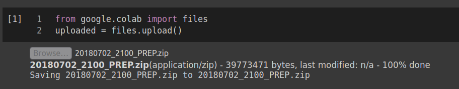
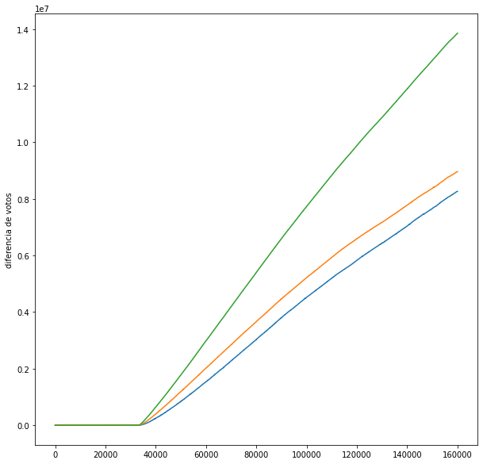

from google.colab import files
uploaded = files.upload()Referencias a videos originales
El EVITEMOS EL FRAUDE !! APRENDE A ANALIZAR EL PREP DEL INE CON PYTHON !!! y las partes describiendo el código estan en
- 0:0:0-24:50 (peque pandas code para plotear lineas de diferencia de votos)
- 1:27:50-1:29:08 (como se ve un fraude)
Desgraciadamente el INE decidio quitar la página inicial del PREP, pero por fortuna no quitaron a donde apunta y se puede encontrar una copia en https://web.archive.org/web/20210526174841/https://www.ine.mx/voto-y-elecciones/prep/ que la ultima disponible es el 27 de Mayo del 2021.
Finalmente para descargar el mismo archivo que se muestra en el video navegar aquí y descargarlo localmente https://prep2018.ine.mx/#/diputaciones/nacional/1/3/1/1
Este otro video explica más a fondo como se pueden detectar los fraudes más a fondo
¡NO TE DEJES ENGAÑAR! MODELOS MATEMÁTICOS PARA DETECTAR FRAUDES ELECTORALES
Ejecutando en colab
Este notebook usa python y se puede ejecutar en la nube por cualquier persona.
Lo siguiente que tenemos que hacer es subirlo, lo unico que tienes que hacer es ejecutarlo mediante el menu
- Runtime -> Run all
ó
- Entorno de ejecución -> Ejecutar todas
ó simplemente mediante CTRL+F9
Al subirlo mediante el siguiente formulario debería de mostarse algo similar a esto 
%%time
# descomprimir el archivo que hayas subido desde el prep
!unzip 20180702_2100_PREP.zipArchive: 20180702_2100_PREP.zip
extracting: 20180702_2100_PREP_diputaciones.zip
extracting: 20180702_2100_PREP_presidencia.zip
extracting: 20180702_2100_PREP_senadurias.zip
CPU times: user 7.46 ms, sys: 872 µs, total: 8.33 ms
Wall time: 273 ms!unzip 20180702_2100_PREP_diputaciones.zipArchive: 20180702_2100_PREP_diputaciones.zip
creating: 20180702_2100_PREP_diputaciones/
inflating: 20180702_2100_PREP_diputaciones/diputaciones.csv
inflating: 20180702_2100_PREP_diputaciones/diputaciones_candidaturas_2018.csv
inflating: 20180702_2100_PREP_diputaciones/LEEME.txt Si ya haz descomprimido los archivos, a partir de aquí puedes sacar las cuentas cumulativas entre un partido y el resto de partidos
# cargar las librerías necesarias
import pandas as pd
import numpy as np
import matplotlib.pyplot as plt
plt.rc('figure', figsize=(10, 10))# definimos algunos valores de las variables
partidos = ['MORENA', 'PAN', 'PRI', 'PRD']
tiempo='FECHA_HORA_CAPTURA'# leemos los datos
datos = pd.read_csv('20180702_2100_PREP_diputaciones/diputaciones.csv', sep='|', engine='python', header=5)# vamos a descartar las líneas que no se contabilizaron
lineas_malas = datos[datos['CONTABILIZADA']==0].index
datos.drop(lineas_malas, inplace=True)def limpia(data, columna):
data[columna] = data[columna].replace('-', 0)
data[columna] = data[columna].replace('Ilegible', 0)
data[columna] = data[columna].replace('Sin dato', 0)
data[columna] = pd.to_numeric(data[columna], errors='raise')for partido in partidos:
limpia(datos, partido)datos.sample(5)| CLAVE_CASILLA | CLAVE_ACTA | ID_ESTADO | ESTADO | ID_DISTRITO_FEDERAL | DISTRITO_FEDERAL | SECCION | ID_CASILLA | TIPO_CASILLA | EXT_CONTIGUA | ... | CONTABILIZADA | MECANISMOS_TRASLADO | SHA | FECHA_HORA_ACOPIO | FECHA_HORA_CAPTURA | FECHA_HORA_VERIFICACION | ORIGEN | DIGITALIZACION | TIPO_DOCUMENTO | COTEJADA | |
|---|---|---|---|---|---|---|---|---|---|---|---|---|---|---|---|---|---|---|---|---|---|
| 1373 | '010263C0100' | '010263C010006' | 1 | AGUASCALIENTES | 3 | Aguascalientes | 0263 | 1 | C | 0 | ... | 1 | D | 4ab896849e13fcc2a26b1962115c2041d23bff9e8bee0b... | 2018-07-01 22:28:00 | 2018-07-01 23:06:00 | 2018-07-01 23:08:02 | CATD | ESC�NER | Acta PREP | 1 |
| 15969 | '071735C0200' | '071735C020006' | 7 | CHIAPAS | 6 | Tuxtla Guti�rrez | 1735 | 2 | C | 0 | ... | 0 | D | - | - | - | - | CATD | ESC�NER | - | - |
| 142531 | '301356B0100' | '301356B010006' | 30 | VERACRUZ | 2 | Tantoyuca | 1356 | 1 | B | 0 | ... | 1 | D | c153534dc09dee6577bdf41e45204db25ac05237b3ed04... | 2018-07-02 08:27:00 | 2018-07-02 09:22:00 | 2018-07-02 09:23:27 | CATD | ESC�NER | Acta PREP | 1 |
| 98989 | '191505C0200' | '191505C020006' | 19 | NUEVO LE�N | 6 | Monterrey | 1505 | 2 | C | 0 | ... | 1 | D | 1f48bb9db93215c4db2a46c73a7459122e9b6956fa4a81... | 2018-07-02 16:26:00 | 2018-07-02 16:45:00 | 2018-07-02 16:46:18 | CATD | ESC�NER | Acta PREP | - |
| 150484 | '304531C0100' | '304531C010006' | 30 | VERACRUZ | 16 | C�rdoba | 4531 | 1 | C | 0 | ... | 1 | F-D | 2f7475f3513f0981216175beb202322a5bb37ca524ad65... | 2018-07-01 21:56:00 | 2018-07-01 23:03:00 | 2018-07-01 23:29:15 | CASILLA | M�VIL | Acta PREP | 1 |
5 rows × 56 columns
# ordenamos los datos por tiempo (la columna 'FECHA_HORA_CAPTURA')
datos_ordenados = datos.sort_values(by=[tiempo])
datos_ordenados.reset_index(inplace=True)diferencias = []
for partido in partidos[1:]:
base = partidos[0]
contra = partido
print(base, 'vs', partido)
resta = np.cumsum(datos_ordenados[base]-datos_ordenados[contra])
diferencias.append(resta)
for d in diferencias:
plt.plot(d)
plt.ylabel('diferencia de votos')
plt.show()MORENA vs PAN
MORENA vs PRI
MORENA vs PRD
Dudas o comentarios
Aquí abajo puedes dejar tus comentarios o dudas que tengas para ejecutar tu mismo este análisis y talvez después otros si más gente coopera al conocimiento colectivo, ¡vamos que es fácil compartir!, recuerden que las cosas que no se coparten se pierden.